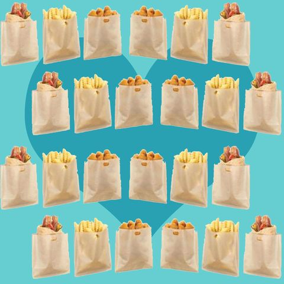

SO MANY TYPES OF TOAST
From avocado toast to tortilla chips a toaster is your best friend! A toaster can be used in so many different ways if known. We want you guys to be able to take advantage of all the things a toaster can do and we want you to share with us how
you use a toaster.
A TOASTER ACCESORY YOU NEED

Let me tell you about toaster bags, if you have a toaster and don’t own any toaster bags these will be a life-changer for you and your toaster. There are so many benefits to using toaster bags, they keep your toaster super clean and you
can utilize your toaster in so many new ways when you have toaster bags, which allows you to cook a lot of things in your kitchenless dorm room. Amazon is a great place to buy toaster bags and they’re super cheap. With toaster bags,
you can make tortillas chips, grilled cheese sandwiches, unthaw frozen meat like sausage patties, and veggie burgers, and you can even make french fries! After reading this I’m hoping you’ll become apart of toaster bag culture.
DIFFERENT GRILLED CHEESE RECIPES TO MAKE WITH YOUR TOASTER
I thought it might be easier to share a video with some amazing grilled cheese ideas that you can use with your toaster and toaster bags. There are so many ways to make a grilled cheese and if you’re short on ideas I hope this video inspires
you.
UNHEARD OF TOASTER HACKS

From grilled cheese to tortilla chips there are so many things a toaster can do! Most college dorms allow toasters in dorms, just not toaster ovens. Here are some things you can put in your toaster, I also really recommend getting toaster
bags, I will link them below. With a toaster you can make tortilla chips by cutting up a tortilla into a triangle and putting the triangles into toaster bags, you can reheat pizza, make a grilled cheese with a toaster bag and some
buttery bread, and you can even make sweet potato fries and regular of course. The toaster bags are key to getting the most use out of your toaster and you can find them on Amazon for cheap! If you have any toaster hacks feel free
to email The College Kitchen your ideas.
 EMAIL US AT AKMSATX2@AOL.COM WITH ANY INFORMATION OR IDEAS YOU WOULD LIKE TO SHARE WITH THE COLLEGE KITCHEN
EMAIL US AT AKMSATX2@AOL.COM WITH ANY INFORMATION OR IDEAS YOU WOULD LIKE TO SHARE WITH THE COLLEGE KITCHEN